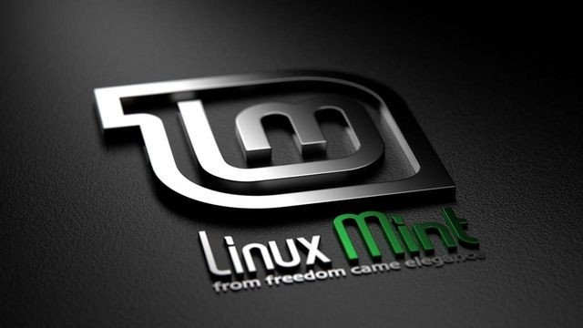

Seguramente hayas oído hablar de Linux Mint, un sistema operativo Linux muy conocido y que está considerado uno de los mejores. Hoy veremos este sistema operativo a fondo y también veremos todo lo que necesitas saber para instalarlo. Linux Mint es un sistema operativo que se creó basándose en el famosísimo Ubuntu, el cual está considerado como el sistema operativo Linux más famoso de todos los tiempos. Linux Mint se caracteriza por ser liviano, veloz y por ser más amigable que el mismo Ubuntu.
